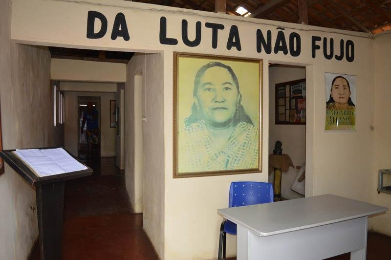

O 13º Salário e a Ruptura da Dívida nos Barracões
A extensão da gratificação natalina aos cortadores de cana atacou diretamente o mecanismo de endividamento forçado mantido pelos armazéns das usinas no Brejo Paraibano.
O Monopólio dos Barracões de Engenho
Embora a Lei Federal nº 4.090/1962 assegurasse a gratificação de Natal aos trabalhadores urbanos desde o início da década de 1960, o setor agrário paraibano tratava o benefício como inexistente para a mão de obra rural. No encerramento do ano civil, os cortadores de cana não dispunham de reservas financeiras para suportar os custos básicos de subsistência.
Essa carência sustentava o sistema dos "barracões" — entrepostos comerciais mantidos dentro dos engenhos pelas próprias administrações patronais. Sem dinheiro em espécie, os lavradores compravam farinha, feijão, querosene e charque a prazo, anotados em cadernetas com ágios que chegavam a 40% sobre o preço da feira livre. O saldo devedor era descontado diretamente das primeiras diárias da safra seguinte.
A Tese Patronal Desfeita no Foro Trabalhista
Nas audiências perante a Justiça do Trabalho, os advogados da Usina Tanques sustentavam que o trabalho no corte era meramente "eventual e precário", o que supostamente desobrigaria as empresas do pagamento do 13º salário proporcional.
Margarida Alves organizou no STR um plantão permanente de conferência contábil. Apresentando cadernos de pesagem e listas de transporte, o sindicato comprovou a fração legal de 1/12 avos por mês trabalhado (superior a 15 dias de serviço), nos termos do Artigo 3º da Lei nº 4.090/1962 combinado com a Lei nº 5.889/1973.
Descentralização da Renda na Feira de Alagoa Grande
As vitórias judiciais forçaram os usineiros a depositar as verbas natalinas em dinheiro vivo perante os trabalhadores. Essa injeção de recursos liberou centenas de famílias da dependência das cadernetas patronais, direcionando as compras para a tradicional feira livre municipal aos sábados e dinamizando a economia de pequenos comerciantes e agricultores familiares da região.
